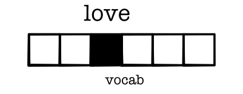

Module 3.0 - Efficiency
Module 3.0
Efficiency
Outline
Motivating Example: Simple NLP
Efficiency
Fast Math
Parallelism
Simple NLP
Classification in NLP
Systems for predicting based on word features
Sentiment Classification
Canonical sentence classification problem
Given sentence predict sentiment class
Key aspects: word polarity
Data

Data

Loss
Same as our basic problem.

Training
Same as our basic problem.
Problem Setup
Training: Exactly the same as simple
Loss: Exactly the same as simple
Models: Mostly similar to the simple problem.
Modeling Challenges
Converting words to tensors
Converting sentences to tensors
Handling word combinations
Word -> Tensors
What is a word?
Treat words as index in vocabulary
Represent as a one-hot vector
Challenge1: Vector Form
One-Hot Issue
Tens of thousands of words
Opposite problem as before, 2-features to 10,000
``Embedding'' represent high-dim space in low dim
Embedding Table
Intuition: Lookup in Table
Get word vector
embeddings[word]Challenge: How to compute backward
Alternative: Lookup by broadcast
Get word vector
(embeddings * word_one_hot.view(VOCAB, 1)).sum(0)Embedding One

How does this share information?
Similar words have similar embedding dim
Dot-product - easy way to tell similarity
(word_emb1 * word_emb2).sum()Differentiable!
Embedding Layer
Easy to write as a layer
class Embedding(minitorch.Module):
def __init__(self, vocab_size, emb_size):
super().__init__()
self.weights = \
minitorch.Parameter(minitorch.rand((vocab_size, emb_size))
self.vocab_size = vocab_size
def forward(input):
return (self.weights.values * input.view(self.vocab_size, 1)).sum(0)Where do these come from?
Trained from a different model
Extracted and posted to use
(Many more details in NLP class)
Examples
Embeddings
embedding.weights.value.update(pretrained_weights)Examples
Query 1
^(lisbon|portugal|america|washington|rome|athens|london|england|greece|italy)$Query 2
^(doctor|patient|lawyer|client|clerk|customer|author|reader)$Challenge 2 : Sentence Length
Sentence Length
Examples may be of different length
Need to all be converted to vectors and utilized
Challenge: Length Dimension

Value Transformation
batch x length x vocab
batch x length x feature
batch x feature
batch x hidden
batch
Network

Reduction / "Pooling"

Benefits
Extremely simple
Embeddings encode key information
Have all the tools we need
Full Model

Engineering Challenge
We have a model, how do we scale it?
Efficiency
Context
We now have a pytorch
All wrappers around ops
Need to make ops fast
Goal
Optimize:
map
zip
reduce
Code
Example map
for i in range(len(out)):
count(i, out_shape, out_index)
broadcast_index(out_index, out_shape, in_shape, in_index)
o = index_to_position(out_index, out_strides)
j = index_to_position(in_index, in_strides)
out[o] = fn(in_storage[j])Why are Python (and friends) "slow"?
Function calls
Types
Loops
Function Calls
Function calls are not free
Checks for args, special keywords andm lists
Methods check for overrides and class inheritance
Types
Critical code
out[o] = in_storage[j] + 3Doesn't know type of in_storage[j]
May need to coerce 3 to float or raise error
May even call __add__ or __ladd__!
Loops
Loops are always run as is.
Can't combine similar loops or pull out constant computation.
Very hard to run anything in parallel.
Other
Many other slow things...
Lists
Classes
Magic of all kind
Fast Math
Alternative 1: Low-level
Pros:
Fastest option
Commonly used
Cons: Harder to modify
Example: Torch, Numpy
Alternative 2: New Languages
Pros:
Keeps code simple
Can be quite fast
Cons: Lose tools and experience
Example: Julia
Alternative 3: Compile Python
Pros:
"Same" language
Integrate code
Cons: A bit hacky :)
Example: Numba
Numba
Python library for speeding up numerical python
API: Higher-order functions to produce fast mathmatical code
How does it work?
Work
def my_code(x, y):
for i in range(100):
x[i] = y + 20
...
my_code(x, y)
fast_my_code = numba.njit()(my_code)
fast_my_code(x, y)
fast_my_code(x, y)Notebook
Terminology : JIT Compiler
Just-in-time
Waits until you call a function to compile it
Specializes code based on the argument types given.
Terminology : LLVM
Underlying compiler framework to generate code
Used by many different languages (C++, Swift, Rust, ...)
Generates efficient machine code for the system
What do we lose?
njit will fail for many python operations
No lists, classes, python functions allowed
Any different types will cause recompilation
Strategy
Use Python for general operations
Use Numba for the core tensor ops
Allow users to add new Numba functions
Code Transformation
Transform
def my_code(x, y):
for i in prange(100):
x[i] = y + 20
...
my_code(x, y)
fast_my_code = numba.njit(parallel=True)(my_code)
fast_my_code(x, y)
fast_my_code(x, y)Notebook
Module 3
Task 3.1
Parallel
Task 3.2
Matrix Mult

Task 3.3

Task 3.4
Task 3.5
Train